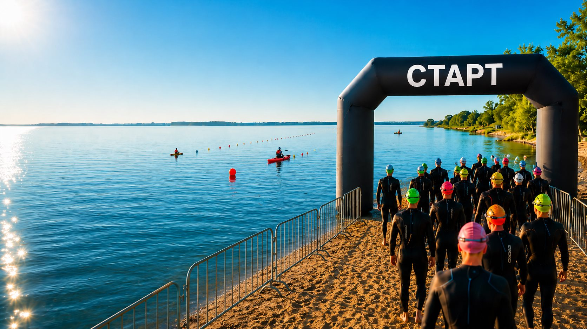

Дистанция для участников категории «Любители».

Губкинский · пляжная территория · 2 августа 2026
Семейный фестиваль «На волне»
Открытая вода, спортивный старт и семейный день у берега. В спортивной части запланировано 40 участников: любители выходят на 400 метров, профи - на 800 метров.
Дата
2 августа 2026
Место
пляжная территория, Губкинский
Вид спорта
плавание на открытой воде
Спортивная часть
40 участников
Статус регистрации
Регистрация откроется после публикации положения
Здесь появятся ссылка на регистрацию, точное время старта, контакты оргкомитета и финальная схема пляжной территории.
Что появится дальшеИдея
Фестиваль, где спортивный заплыв становится событием для всего берега.
«На волне» соединяет соревнования по плаванию на открытой воде и семейный городской формат. На пляже встречаются спортсмены, зрители, семьи и партнеры события; спортивная программа остается понятной для участников, а береговая часть - комфортной для гостей.
Соревнования
Две дистанции на открытой воде
Спортивная часть рассчитана на 40 участников. Категории: мужчины, женщины, любители и профи.
Дистанция для участников категории «Профи».
Мужчины
Женщины
Любители
Профи
Участникам и гостям
Сайт разделяет спортивный старт и фестивальный день.
Так участники быстро находят условия заплыва, а семьи и зрители понимают, зачем приходить на пляж и где быть во время стартов.
Любителям
Категория с дистанцией 400 метров. Подходит для участников, которые хотят попробовать формат открытой воды в рамках городского события.
Профи
Категория с дистанцией 800 метров. Для подготовленных участников, которым нужен более спортивный темп и длинная дистанция.
Зрителям
Береговая часть помогает следить за стартами, поддерживать участников и оставаться внутри семейной программы фестиваля.
Безопасность
Открытая вода требует понятных правил.
Перед участием нужно ознакомиться с положением соревнований после его публикации.
Финальные требования к допуску, экипировке и стартовой процедуре будут указаны в официальном регламенте.
На сайте предусмотрено место для схемы дистанции, зоны старта и финиша, когда оргкомитет утвердит карту пляжной территории.
Программа
Сценарий дня вокруг воды
Точное расписание появится после утверждения оргкомитетом. Структура уже готова под официальный тайминг.
Открытие пляжной территории
Встреча участников, навигация, информация для спортсменов и гостей.
Брифинг участников
Правила старта, порядок выхода на дистанцию и ответы на вопросы перед заплывом.
Заплывы 400 и 800 м
Соревнования по категориям «Любители» и «Профи» на открытой воде.
Финиш и награждение
Финишная зона, результаты, фотографии и завершение спортивной части.
Пляжная территория
Схема берега поможет ориентироваться на фестивале.
После утверждения карты здесь появятся вход, старт, финиш, зрительская зона, партнеры и маршрут движения участников.
Открытая вода
Старт
Финиш
Береговая зона
Организаторы и партнеры
Главная роль организатора уже обозначена.
Партнерский ряд можно расширить после подтверждения спонсоров и передачи логотипов.
Организатор
Федерация триатлона Ямала
При содействии
Администрация города Губкинского
Партнер
логотип после подтверждения
Партнер
логотип после подтверждения
Регистрация
Регистрация откроется после публикации положения.
На сайт осталось добавить ссылку регистрации, положение соревнований, точное время начала, контакты оргкомитета и финальную схему пляжной территории.
Посмотреть дистанцииСтатус: событие объявлено, регистрационная ссылка ожидается.
FAQ
Короткие ответы для гостей и участников
Когда пройдет фестиваль?
2 августа 2026 года на пляжной территории города Губкинского.
Какой вид спорта в спортивной части?
Плавание и плавание на открытой воде.
Какие дистанции заявлены?
400 метров для категории «Любители» и 800 метров для категории «Профи».
Кто может участвовать?
Категории участников: мужчины, женщины, любители и профи. Планируемое количество участников спортивной части - 40 человек.
Кто организатор?
Основной организатор - Федерация триатлона Ямала. Событие проходит при содействии администрации города Губкинского.